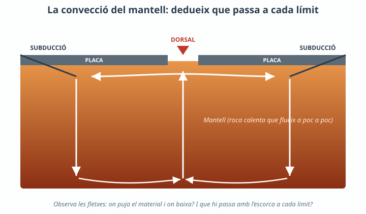
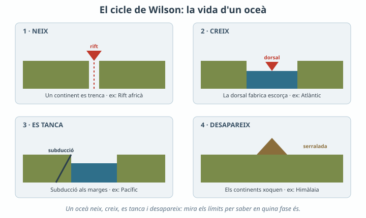
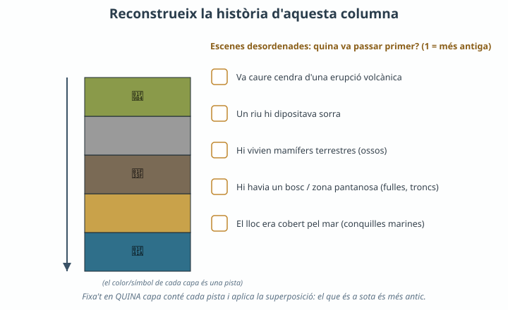

La teva notícia (terratrèmol/volcà): on ha passat, és a prop d'un límit, i quina hipòtesi tens sobre què hi ha sota les plaques que ho provoca?
✕
🔥 Repte
Dissenya el teu model com un experiment: hipòtesi, què representa cada part, què observaràs (la variable que mires) i què deixaràs igual perquè la comparació sigui justa. Un company diu: «l'aigua no és roca, així que el model no serveix». Al final l'hauràs de rebatre.
1a. Hipòtesi, disseny i què representa cada part del model (aigua, colorant, superfície):
1b. Què observaràs (variable) i què mantindràs igual per fer la comparació justa?
1c. Dibuixa i descriu el que has observat:
dibuix del model + observació
1d. Respon al company: què SÍ pot ensenyar-te aquest model sobre el mantell i què NO, i per què tot i les diferències continua sent útil?
1e. Al simulador tectonic-explorer.concord.org, obre i tanca un oceà: què hi has vist i com ho relaciones amb el corrent de convecció?

Fig.1 · La convecció del mantell mou les plaques.
✕
🔥 Repte
El model i el mantell real es diferencien en la mida, el temps i el material (aigua vs roca sòlida que flueix lentíssimament). Explica per què, malgrat això, el model captura el mecanisme essencial de la convecció.
2a. Relaciona el moviment del corrent amb els límits: on puja (dorsal, oceà s'obre) i on baixa (subducció, oceà es tanca). Explica-ho amb les teves paraules.
2b. Posa un altre exemple quotidià de convecció (radiador, olla, aire d'una habitació) i digues què faria, en aquest exemple, el paper de la «placa» que el corrent arrossega.

Fig.2 · Les quatre fases del cicle de Wilson.
✕
🔥 Repte
Tria un oceà (del teu planeta o de la Terra) i justifica en quina fase del cicle de Wilson es troba a partir dels límits que l'envolten (té dorsal? té fosses de subducció?). Després fes una predicció a 100 milions d'anys.
3a. Oceà triat, fase i justificació amb els seus límits:
3b. Predicció: què li passarà d'aquí a 100 milions d'anys i per què?

4a. Numera les capes (1 = més antiga, 5 = més recent) i explica la història que expliquen les roques i amb quin principi ho decideixes.
✕
🔥 Repte
A vegades hi ha capes inclinades sota d'altres d'horitzontals, o falta un tros de la sèrie. Explica què hauria d'haver passat perquè unes capes quedin inclinades i després en vinguin d'horitzontals a sobre (pensa en les plaques), i què vol dir que «falti» un tros de la història.
4b. La teva resposta al repte:
✕
🏠 Feina per a casa
1
Busca la imatge d'una columna o un tall geològic real, identifica-hi tres capes, digues quina és la més antiga i, si en trobes una, una discontinuïtat (una superfície on falta part de la sèrie).
Adaptat per Albert Pahissa de l'original de Jordi Domènech. Llicència
CC BY-NC-SA 4.0 (Reconeixement–NoComercial–CompartirIgual).